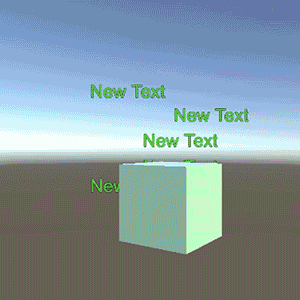
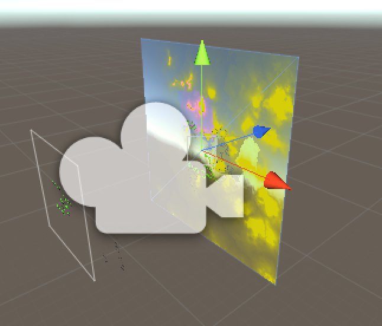
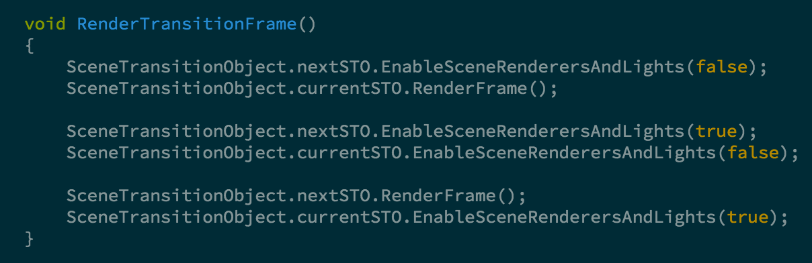
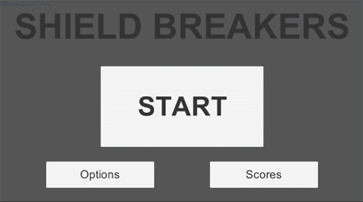

Transition Effect
July 10 2016
Wow, it’s been awhile since the last post! I hadn’t worked on my transition
effect much over the last few months due to a pretty hectic period at work, but
last week I got things solved and managed to make a fairly general package
that can be dropped into any project. The end result is this:

It’s a transition between two test scenes that both occupy the same space in
world coordinates, have different geometry, have different ambient light, have
different UI canvases, and have different scene lights. Despite neither scene
being particularly interesting, the GIF above demonstrates how all of the
information contained in each scene is preserved and nothing is rendered twice.
To achieve this effect, there are two main components used. The first is a
SceneTransitionObject, or STO, and the second is the TransitionController.
Any scene that we want to transition to or from needs an STO, and right now it needs
to be the root of all objects in the scene. This isn’t absolutely required, but
we would need to do an expensive FindObjectsOfType call instead of a
GetComponentsInChildren call if we didn’t follow this guideline. An STO has
references to all of the lights, cameras, canvases, and renderers in a scene and
in Awake it will figure out if it is the current STO, or the next STO. In other
words, is it the from or to STO in the transition? All of an STO’s cameras
are disabled and rendered manually every frame, which gives us total control
over what we’re displaying.
The TransitionController has two RenderTextures (from and to) and a camera that
is ultimately responsible for rendering everything in the game. It can either be
rendering the contents of the “from” STO, the “to” STO, or some combination of
the two. When a transition is invoked, a special shader is used to smoothly
transition from the “from” texture to the “to” texture. To do this, the shader
needs to support two textures, and take an interpolation value.
The transition controller in the scene view looks like this:

A transition needs to be invoked when a new scene containing an STO is loaded
additively. The TransitionController will yield on the existence of a new STO,
and then it will use the following code to control individual rendering of each
scene once per frame:

What is happening here is as follows: We disable all of the renderers and lights
in the new scene, and then we call the current scene’s STO’s RenderFrame method.
This will trigger a render to our “from” RenderTexture. Then we turn on all of
the renderers and lights in the new scene, disable all of the renderers and lights
in the current scene, and render the contents of the next scene to the “to” RenderTexture.
This continues until the transition is done, at which point we set the “to” STO to
be the current one (or, the “from” STO), unload the previous scene, and resume
rendering only the “from” STO’s contents.
Using this technique, any shader that interpolates between textures can be inserted
and used to transition from gameplay to menu screens, gameplay to gameplay… or
whatever really. Here’s an example of it in action to transition from a title screen
to gameplay in a side project I’m occasionally hacking on:

I plan to make this available on the asset store or on GitHub or something
eventually. I just need to write up a bit of documentation and handle a few edge
cases.
Whoops! Actually… That’s alright
March 9 2016
I had a few recent posts about playing with Voronoi Diagrams lately in fullscreen
effects. The results were interesting, and pretty nonsensical. I’m at a point now
in my TOP SECRET project (Which I’ll probably post about after GDC) where I need
to be transitioning between different gameplay scenes. I was thinking that one
neat method of doing this might be to utilize that Voronoi work a little bit.
It isn’t really very hard to do; I’m just sampling an RGB noise texture for my
Voronoi points, and then colouring the cell with whatever the noise texture’s
colour is at the nearest sample point. The source looks like this:

And the result, which is pretty plain, looks like this:

But then I got distracted from the task of making something relevant to my side
project and decided to add some sine waves, because that’s usually what you do
when you write a fragment shader, and wound up with this:

This was cool and looked more arty than anything I’ve done before lol, but I
thought it would be cool to try and add some texture. So, I then started trying to
colour things by their distance from the center of the cell. My implementation is
naive (read: wrong) but it produced this:

Which I thought was pretty cool. So then I thought, what about if we added more
sines… and some cosines too? I couldn’t get the result to loop cleanly, but I
thought it looked nice anyway so here you go:

Programming shaders is fun! Now maybe I’ll come out of this with something to
actually use in my game…
Blonder Chronicles
February 27 2016
I’m pressing on with trying to figure out Blonder a bit more. I’ve been making a
prototype for a game lately (which I’ll probably post about soonish – I want to
have it ready for the next Halifax Game Collective meetup.)
After I got basic gameplay out of the way, I decided to start making a character
because as it stands, everything in my game is a cube.
So I hopped into Blonder and modelled, rigged, and animated a humanoid-ish character:

I gave it 6 animations; an idle, a run, a jump, a fall, a landing, and one for
taking damage. I kept the starting and ending frames mostly uniform with the states
that the animations could transition in and out of so that blending would go nicely.
I then brought it into Unity and made a pretty straightforward state machine to
control it, and set up the transitions to blend appropriately.

I already have the code dictating all of these behaviours done up, so hooking my
player controller up to the animator should be pretty straightforward. From here
I want to model an enemy or two, and then start working on the terrain and scenery
for the game. As I have the basic game loop established (menu, gameplay, death)
and a scoring system, I think that adding some pretty basic art will help it feel
a lot better. The following gif doesn’t show all the animations, but it shows the
transition from running to jumping to falling to landing:

DATA GHOST
February 20 2016
I don’t know where the DATA GHOST came from, but once the idea was there, it had
to be made. I made the ghost by creating a cyclical curve in Blonder


and then converting it to a mesh. I’ve got a vertex shader handling the mouth and “feet”
of the ghost, and the trail is a combination of two dense line renderers and a
particle system.
To get the squares to transition into 1’s and 0’s, I have a single
128x64 texture that has a 1 on one half and a 0 on the other. Initially the particles
are randomly given a vertex colour of either black or white. When the particles
cross a certain point in space relative to the ghost, I blend between a solid colour
and half of the 1/0 texture. I get either a 1 or a 0 by using the particle’s vertex
colour to offset the UVs and only grab half of the texture.

The background is a scrolling grid rendered in a fragment shader, not much going
on there except for some fog support to display the INFINITE VOID.
The text is appearing on screen by just using randomish offsets in a coroutine to
simulate a typing delay, and moving the cursor image based on the length of text.

A Day At The Beach
February 6 2016
I started messing around with Unity’s procedural skybox shader which is a lot
of fun. Changing the colour, shape, and movement of the sun has interesting
results. Also pictured are some birds and a tree I made in Blonder, the addition
of a chromakeyed swirl, hue shift, and palette swap to the Substandard Shader,
and some chromatic aberration.
Keying the swirl lets me choose whether it should affect all, most, or none of
the screen, and using a noise texture to transition between effects gives an
uneven wipe between chaos and… less chaos.
I brought back some water I implemented a year or so ago, and shaped some terrain
using curves to specify geometry in Blonder.

")